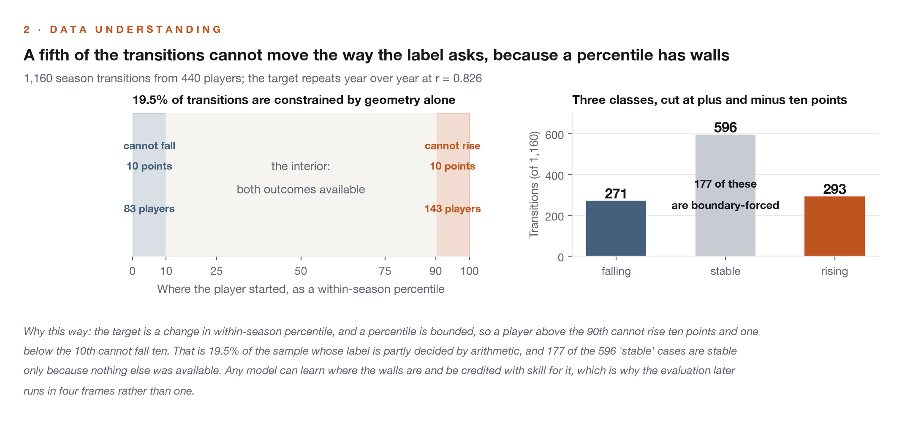
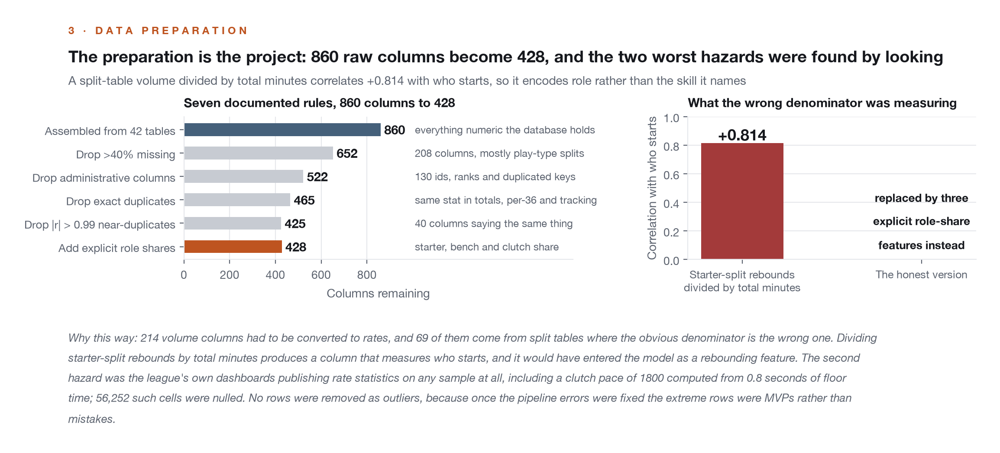
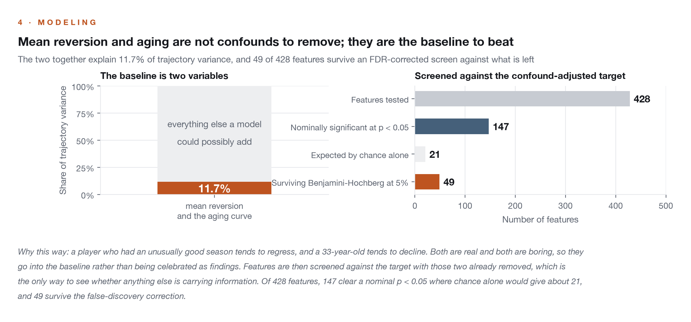
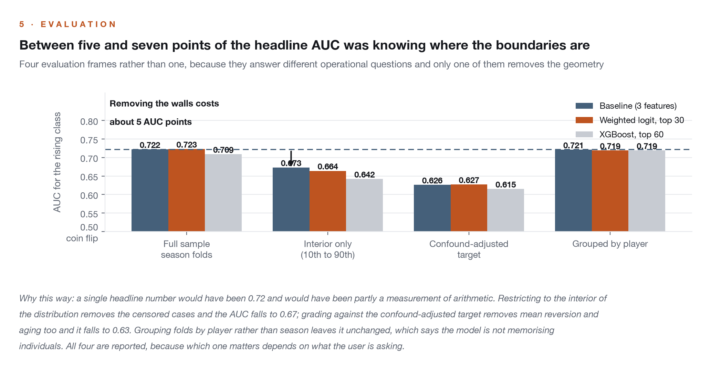
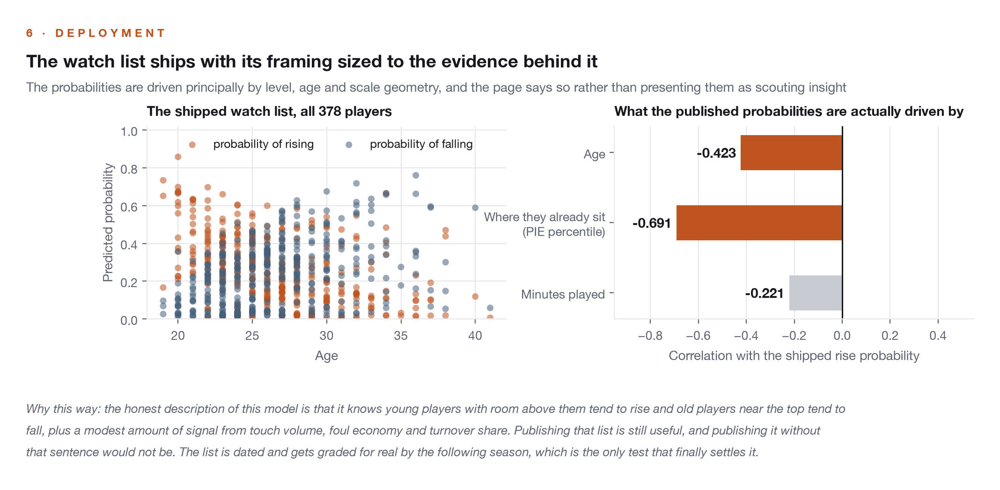
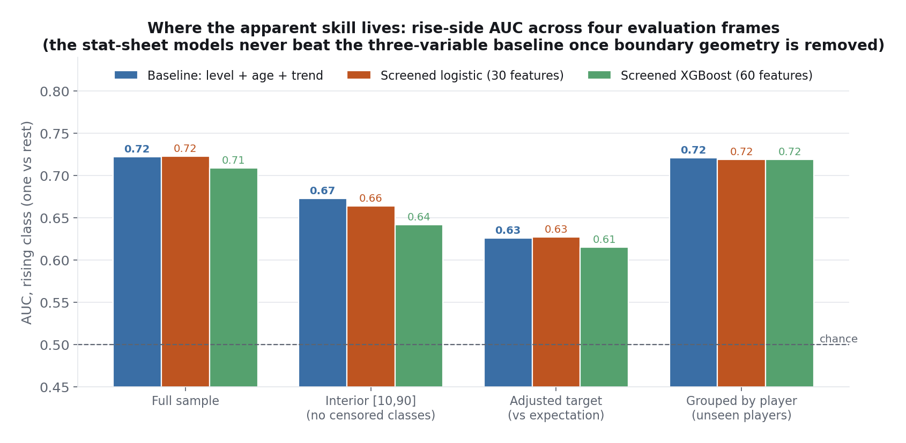

Player Trajectory Prediction
Which players are about to improve relative to the league, and which are about to decline? This analysis starts from everything, all 860 numeric columns across 42 player tables, and whittles them into one clean analysis table with every drop documented. Its most important result is a correction to its own headline: a bounded percentile target mechanically censors its own classes, and measuring that changed the conclusion.
Who is rising, who is falling, and how much does the full stat sheet help?
Trajectory is mostly three variables: current level, age, and last year's trend. That baseline ranks next-season risers at 0.72 AUC on the full sample and 0.67 on the interior of the distribution, and no model built on the 428 cleaned features beats it on the rise side in any corrected evaluation frame. What the full stat sheet demonstrably adds is a modest fall-side signal, about four points of AUC, visible when the question is posed as deviation from expectation, carried by interior-production and role-economy features.
The preparation is the project. Eight hundred sixty raw columns become 428 modeling-ready features through seven documented rules, and the two worst hazards were caught by the outlier analysis rather than documentation: split-table volumes normalized by total minutes secretly encode who starts (r = +0.814 with starter share), and the league's own dashboards publish rate statistics computed on any sample, including a clutch pace of 1800 from 0.8 seconds of floor time. Rows removed as outliers: zero, because after the pipeline errors were fixed, the extreme rows were MVPs, not mistakes.
Five steps, and a target definition that turns out to be the binding limitation on all of them.





The target is a within-season percentile change with classes cut at plus and minus ten points, and a percentile is bounded: a player above the 90th percentile cannot rise ten points, one below the 10th cannot fall ten. That constrains 19.5 percent of all transitions mechanically, so part of any model's apparent skill can be knowledge of where the walls are. The evaluation therefore runs in four frames, full sample, interior of the distribution, a baseline-adjusted target, and player-grouped folds, and the frame comparison is consistent with boundary geometry accounting for roughly five to seven points of the full-frame AUC.
Mean reversion and the aging curve are real and strong, and they are the baseline: the two confounds alone explain 11.7 percent of trajectory variance. Forty-nine of 428 features survive a false-discovery-corrected screen against the confound-adjusted target, clustering into interpretable families, interior touch volume, foul economy, turnover share, role shares. The prospective watch list ships with its framing sized to the evidence: probabilities driven principally by level, age, trend, and scale geometry, graded for real by the following season.

The top of each list entering 2026-27, exactly as the model wrote them before the season. The read-aloud test is the point: risers are young players with secure minutes and room above them, plus one veteran the model likes off a depressed baseline; decliners are aging contributors sitting at high percentiles. That is what a model driven by level, age, and trend should produce, and the season will grade it.
Projected risers
| Player | Age | P(rise) |
|---|---|---|
| Bub Carrington | 20 | 0.86 |
| Jeremiah Fears | 19 | 0.73 |
| Will Riley | 20 | 0.70 |
| Rayan Rupert | 22 | 0.70 |
| Ben Saraf | 20 | 0.68 |
| Drake Powell | 20 | 0.67 |
| VJ Edgecombe | 20 | 0.67 |
| Khris Middleton | 34 | 0.67 |
Projected decliners
| Player | Age | P(fall) |
|---|---|---|
| Paul George | 36 | 0.76 |
| Dennis Schröder | 32 | 0.72 |
| Aaron Gordon | 30 | 0.68 |
| CJ McCollum | 34 | 0.67 |
| Jrue Holiday | 36 | 0.66 |
| Tim Hardaway Jr. | 34 | 0.66 |
| Tobias Harris | 33 | 0.64 |
| Thomas Bryant | 28 | 0.63 |
All 378 qualifying players are sortable in the watch list explorer.
Sort the full watch list
All 378 qualifying players, sortable by either probability. The published correction applies to every row: these probabilities are driven principally by current level, age, prior trend, and the geometry of a bounded scale, and all model performance is development evidence until the 2026-27 season grades it.
The watch list should be read as what the corrected analysis showed it to be: a calibrated synthesis of current level, age, and prior trend, with the stat sheet contributing a modest fall-side signal under one target definition. That is a useful product as long as nobody mistakes it for hidden-signal discovery, and the 2026-27 season is reserved as its first clean confirmation.
The review is the reason this analysis says what it says. It flagged the boundary censoring, and quantifying it revealed that the stat-sheet models stop beating the three-variable baseline on the rise side once the mechanically constrained regions are removed. It exposed a second confound in the original headline: most of a claimed balanced-accuracy jump came from class weighting, not features, which a weighted-baseline row now isolates. It forced an explicit provenance rule after finding the notebook could ingest its own deployed output on a re-run. And it required the evaluation governance to sit next to the results: every reported number is development evidence, with the following season reserved as the first untouched confirmation.
The target is one value metric, and a plus-minus family target could rank players differently. The class cut at ten points is a convention whose boundary effects are now measured rather than ignored. Four transition seasons is the sample depth. The 500-minute floor excludes the deep-bench leaps that make the best breakout stories. Model configurations were refined against the reported validation folds, which is disclosed beside the results rather than buried.
Technical deep dive
Technical highlights
- Table-aware normalization: split-table volumes divided by their own split's minutes, never total minutes, with a 24-minute denominator floor that converts absurd small-sample rates into missing values.
- A three-layer outlier hunt, robust z-scores, integrity bounds, and Mahalanobis distance on component scores, that caught two pipeline bugs and a source-data hazard, and ended by keeping every genuine player.
- Feature selection nested inside every validation fold, with the fold-stable subset, 20 features chosen in every fold, forming the deployed model's interpretable core.
- Four evaluation frames reported together, because the stat sheet's contribution is the gap between model and baseline within a frame, never the gap between frames.
Key decisions
- Why keep the raw-percentile target if it censors?
- Because the operational question, who will be in each class, includes the geometry: an aging star at a high percentile is more likely to fall, partly because he has room to. The analysis keeps the operational target and measures the geometry separately, so skill and arithmetic are never conflated.
- Why deploy a watch list the stat sheet barely improves?
- Because a calibrated synthesis of level, age, and trend, made quantitative and reproducible, is a useful product as long as nobody mistakes it for hidden-signal discovery. The page it ships on says exactly what drives it.
Technology stack
Built on five seasons (2021-22 through 2025-26) of NBA Stats dashboard data compiled into a local SQLite database of 97 tables. All six research analyses run against the same database. Notebooks available by email.